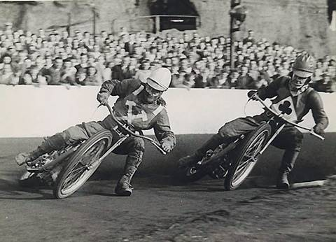

Historia Żużla
Żużel, znany również jako "czarny sport", to dyscyplina, która od ponad stu lat fascynuje fanów na całym świecie swoją dynamiką i widowiskowością. Jego korzenie sięgają początku XX wieku, a rozwój sportu był ściśle związany z ewolucją motocykli i pasją do wyścigów.
Początki i Pierwsze Wyścigi
Pierwsze wyścigi motocyklowe na owalnych torach, często adaptowanych z torów konnych lub kolarskich, miały miejsce w Stanach Zjednoczonych i Australii w latach 10. i 20. ubiegłego wieku. W Australii, w 1923 roku, niejaki Arthur Sturgess jest często uznawany za prekursora "broadsidingu" – techniki jazdy bokiem w poślizgu, która stała się znakiem rozpoznawczym żużla.
W Europie sport zyskał popularność w Wielkiej Brytanii, gdzie w 1928 roku odbyły się pierwsze oficjalne zawody żużlowe w High Beech. Szybko rozprzestrzenił się na inne kraje kontynentu, w tym do Polski, gdzie w latach 30. zaczął zdobywać rzesze fanów.
Rozwój i Złota Era
Po II wojnie światowej żużel przeżywał swój złoty okres. Rozwój technologii motocyklowej, budowa nowych stadionów i rosnąca liczba zawodników przyczyniły się do wzrostu popularności. W latach 50. i 60. żużel stał się jednym z najchętniej oglądanych sportów motorowych, a międzynarodowe rozgrywki, takie jak Indywidualne Mistrzostwa Świata, przyciągały tłumy.
W tym okresie dominowali tacy zawodnicy jak Ove Fundin, Barry Briggs, czy Ivan Mauger, którzy stali się legendami sportu. Polska również miała swoich bohaterów, a Florian Kapała czy Antoni Woryna byli inspiracją dla kolejnych pokoleń.
Współczesność i Ewolucja
Współczesny żużel to sport globalny, z ligami zawodowymi w wielu krajach, w tym w Polsce, Szwecji, Danii i Wielkiej Brytanii. PGE Ekstraliga w Polsce jest uznawana za najlepszą ligę świata, przyciągającą największe gwiazdy sportu.
Ewolucja sprzętu, poprawa bezpieczeństwa zawodników i modernizacja stadionów to stałe elementy rozwoju żużla. Mimo zmieniających się trendów, duch sportu – szybkość, ryzyko i pasja – pozostaje niezmienny, a żużel nadal dostarcza niezapomnianych emocji kibicom na całym świecie.